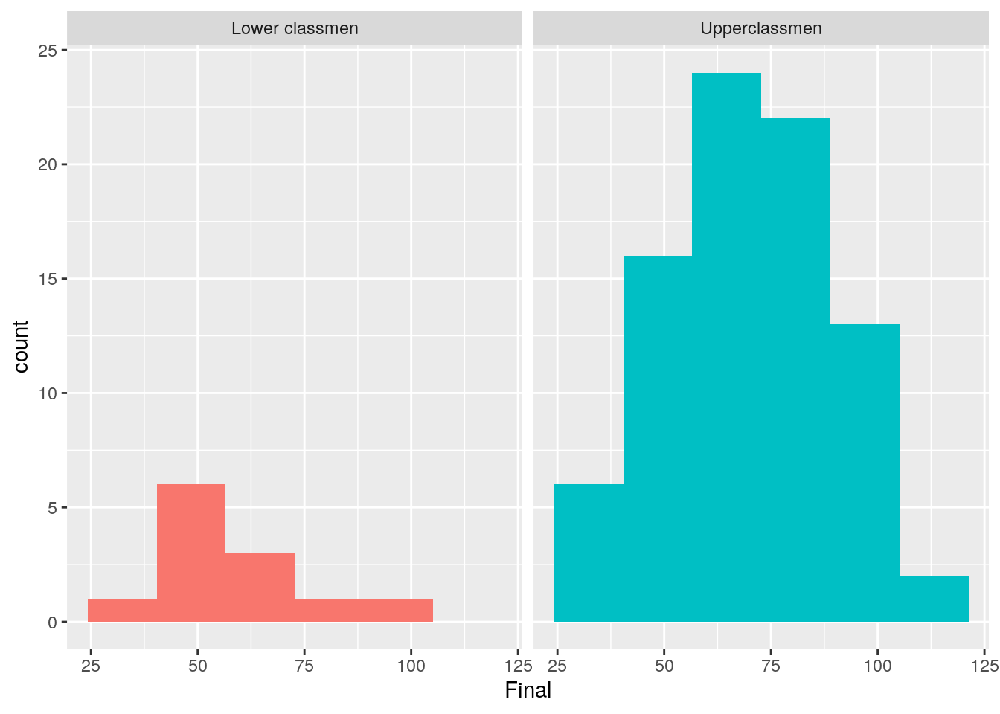
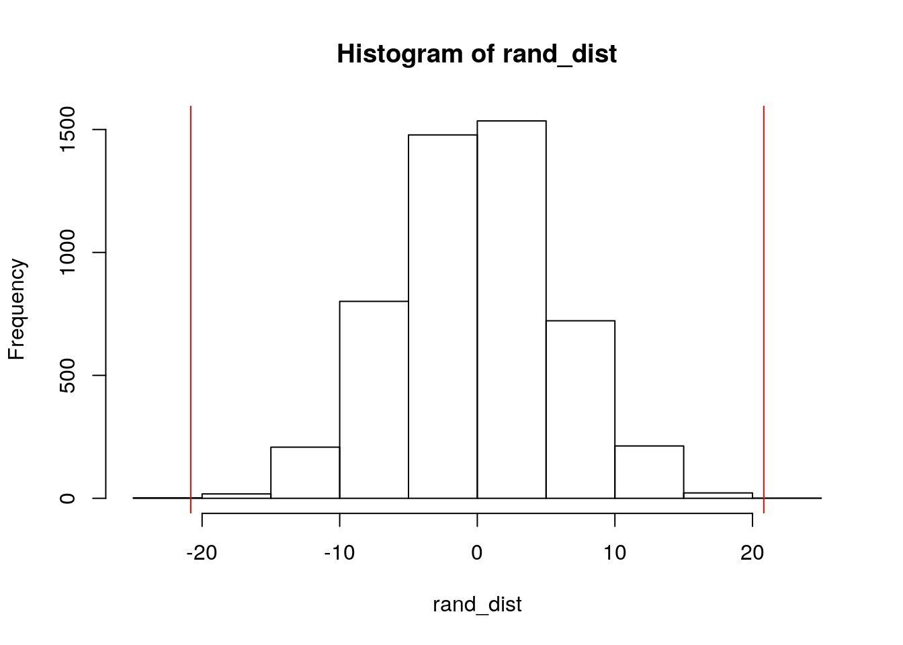
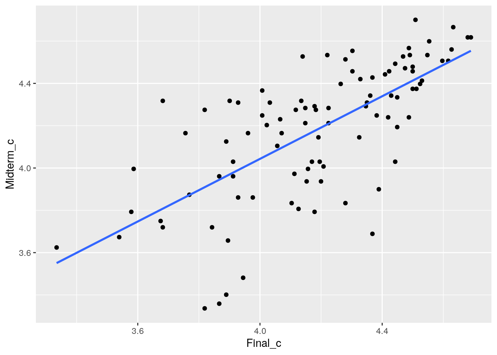
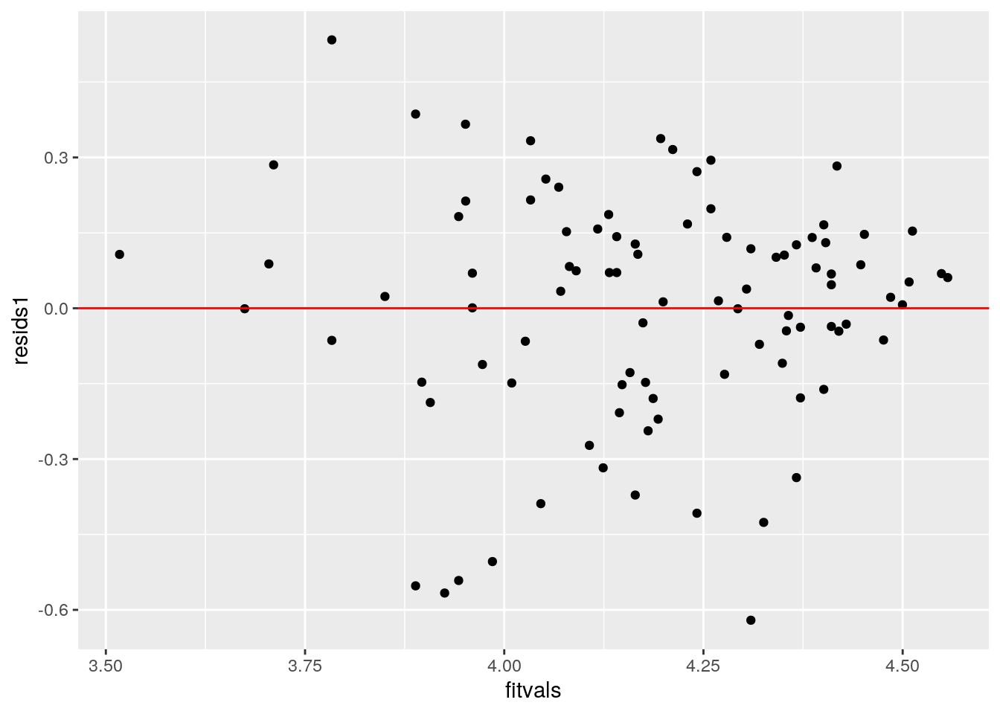
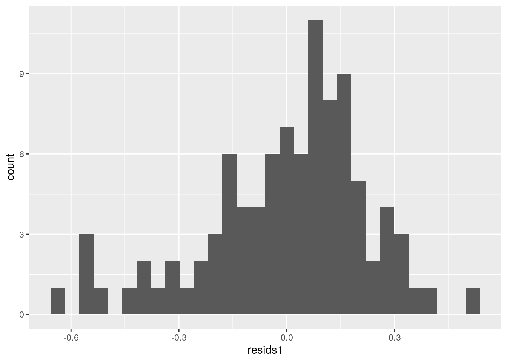
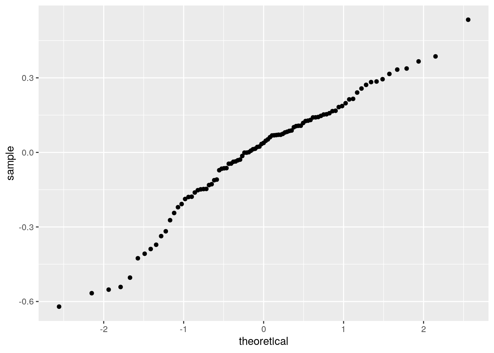
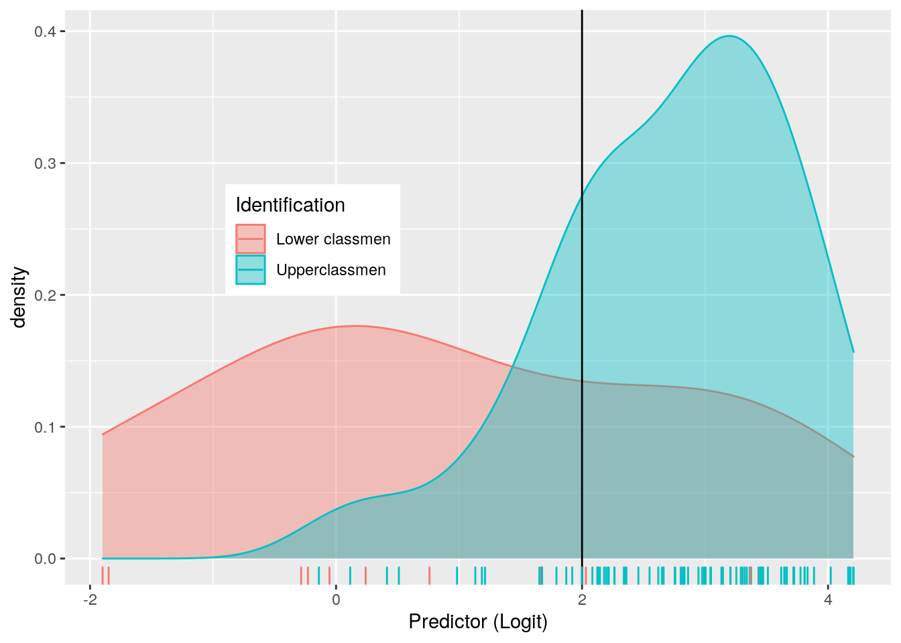
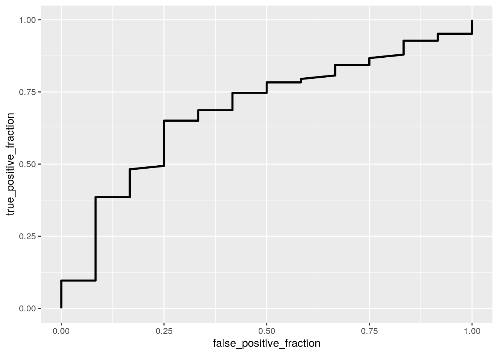
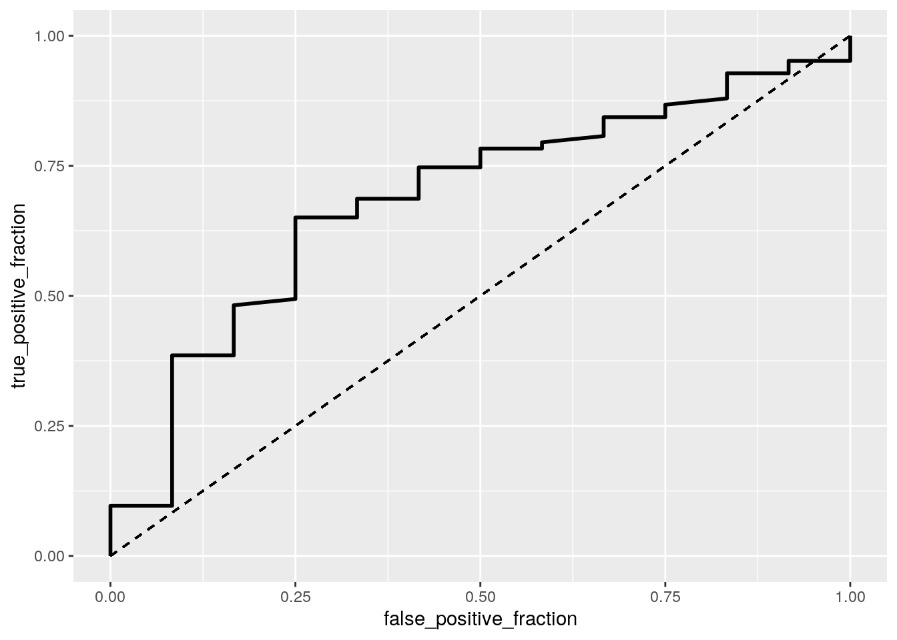

January 1, 0001
R Markdown
This is an R Markdown document. Markdown is a simple formatting syntax for authoring HTML, PDF, and MS Word documents. For more details on using R Markdown see http://rmarkdown.rstudio.com.
When you click the Knit button a document will be generated that includes both content as well as the output of any embedded R code chunks within the document. You can embed an R code chunk like this:
Introduction: For Project 2, I chose to focus on class grades from a Chemical Engineering course at McMaster University. This dataset includes 96 total observations and 7 variables. The variables include, Prefix (what year the student is in college), Assignment (student’s grade for assignment), Tutorial (student’s grade for tutorial assignment), Midterm (student’s grade for midterm exam), Take home (student’s grade for take home exam), Final(student’s grade for final exam), and Identification student’s classification where lower classmen: freshmen and sophomore and upperclassmen: juniors and seniors).
Manova Testing:
library(readxl)
classdata <- read_xlsx("Project2.xlsx")
head(classdata)## # A tibble: 6 x 7
## Prefix Assignment Tutorial Midterm TakeHome Final Identification
## <chr> <dbl> <dbl> <dbl> <dbl> <dbl> <chr>
## 1 Sophomore 57.1 34.1 64.4 51.5 52.5 Lower classmen
## 2 Senior 95.0 105. 67.5 99.1 68.3 Upperclassmen
## 3 Senior 83.7 83.2 30 63.2 48.9 Upperclassmen
## 4 Junior 81.2 96.1 49.4 106. 80.6 Upperclassmen
## 5 Senior 91.3 93.6 95 107. 73.9 Upperclassmen
## 6 Junior 95 92.6 93.1 97.8 68.1 Upperclassmenman1<-manova(cbind(Tutorial, Final)~Identification, data= classdata)
summary(man1)## Df Pillai approx F num Df den Df Pr(>F)
## Identification 1 0.21593 12.668 2 92 1.382e-05 ***
## Residuals 93
## ---
## Signif. codes: 0 '***' 0.001 '**' 0.01 '*' 0.05 '.' 0.1 ' ' 1summary.aov(man1)## Response Tutorial :
## Df Sum Sq Mean Sq F value Pr(>F)
## Identification 1 4546 4546.0 24.13 3.845e-06 ***
## Residuals 93 17521 188.4
## ---
## Signif. codes: 0 '***' 0.001 '**' 0.01 '*' 0.05 '.' 0.1 ' ' 1
##
## Response Final :
## Df Sum Sq Mean Sq F value Pr(>F)
## Identification 1 1413 1412.61 4.1035 0.04566 *
## Residuals 93 32015 344.25
## ---
## Signif. codes: 0 '***' 0.001 '**' 0.01 '*' 0.05 '.' 0.1 ' ' 1library(tidyverse)## ── Attaching packages ─────────────────────────────────────── tidyverse 1.3.0 ──## ✓ ggplot2 3.3.3 ✓ purrr 0.3.4
## ✓ tibble 3.1.1 ✓ dplyr 1.0.5
## ✓ tidyr 1.1.2 ✓ stringr 1.4.0
## ✓ readr 1.4.0 ✓ forcats 0.5.1## ── Conflicts ────────────────────────────────────────── tidyverse_conflicts() ──
## x dplyr::filter() masks stats::filter()
## x dplyr::lag() masks stats::lag()classdata%>%group_by(Identification)%>%summarize(mean(Tutorial),mean(Final))## # A tibble: 2 x 3
## Identification `mean(Tutorial)` `mean(Final)`
## <chr> <dbl> <dbl>
## 1 Lower classmen 71.5 58.4
## 2 Upperclassmen 92.3 70.0library(rstatix)##
## Attaching package: 'rstatix'## The following object is masked from 'package:stats':
##
## filtergroup1 <- classdata$Identification
DVs <- classdata %>% select (Tutorial, Final)
sapply(split(DVs, group1), mshapiro_test)## Lower classmen Upperclassmen
## statistic 0.8749335 0.9325375
## p.value 0.07550577 0.0002999813A total of 3 tests were done above. These tests include 1 MANOVA and 2 ANOVA’s. The t-tests were not done because the ANOVA tells me the two groups are different. However, if this wasn’t true, there’d be 1 MANOVA, 2 ANOVAS, and 2 * 10 = 20 unique t tests. First, I ran a one-way MANOVA test in order to determine the effect of the classification of a student and two dependent variables, Tutorial and Final grades. Ho: The means of all groups are equal for each response variable of score and distance. Ha: For at least one response variable, at least on group mean differs. The MANOVA test showed the Pillai trace = 0.21593, pseudo F = 12.668 and p= 1.382e-05. Next, followup ANOVA’s were done due to the p-value being significantly small. For tutorial, the statistics are as following: pseudo F= 24.13 and p = 3.845e-06 and for Final, the statistics are as following: pseudo F= 4.1035 and p= 0.04566.The p values in both ANOVA’s are less than alpha value of 0.05, therefore the null hypothesis can be rejected, meaning one variable differs from classification/identification.
RANDOMISATION TEST
library(vegan)## Loading required package: permute## Loading required package: lattice## This is vegan 2.5-7library(ggplot2)
ggplot(classdata, aes(Final, fill = Identification)) + geom_histogram(bins = 6.5) + facet_wrap(~Identification, ncol=2) + theme(legend.position = "none")
classdata %>% group_by(Identification) %>% summarize(means = mean(Tutorial)) %>% summarize(mean_diff = diff(means))## # A tibble: 1 x 1
## mean_diff
## <dbl>
## 1 20.8newclassdata <- classdata %>% group_by(Identification) %>% summarize(m = mean(Final)) %>% summarize(diff(m))
rand_dist <- vector()
for (i in 1:5000){
new_data <- data.frame(Final = sample(classdata$Final), Identification = classdata$Identification)
rand_dist[i] <- mean(new_data[classdata$Identification == 'Lower classmen', ]$Final) - mean(new_data[new_data$Identification == "Upperclassmen",]$Final)
}{hist(rand_dist); abline(v = c (-20.8231, 20.8231), col="red")}
mean(rand_dist> 20.8231 | rand_dist < -20.8231)## [1] 4e-04First, 5,000 random permutations were made. The p-value for permutation test is 2e-04, which is less than the alpha value of 0.05, therefore the null hypothesis can be rejected and I can conclude that the results are significant. In addition the difference in means is 20.8231. The mean of upperclassmen grades is different than lowerclassmen grades.
Linear Regression Model
classdata$Final_c <- log(classdata$Final)
classdata$Midterm_c <- log(classdata$Midterm)
fit1 <- lm(Midterm_c ~ Identification* Final_c, data = classdata)
summary(fit1)##
## Call:
## lm(formula = Midterm_c ~ Identification * Final_c, data = classdata)
##
## Residuals:
## Min 1Q Median 3Q Max
## -0.62065 -0.12970 0.03818 0.14176 0.53391
##
## Coefficients:
## Estimate Std. Error t value Pr(>|t|)
## (Intercept) 1.40706 1.14229 1.232 0.2212
## IdentificationUpperclassmen -0.44548 1.19955 -0.371 0.7112
## Final_c 0.67744 0.28237 2.399 0.0185 *
## IdentificationUpperclassmen:Final_c 0.08902 0.29541 0.301 0.7638
## ---
## Signif. codes: 0 '***' 0.001 '**' 0.01 '*' 0.05 '.' 0.1 ' ' 1
##
## Residual standard error: 0.2311 on 91 degrees of freedom
## Multiple R-squared: 0.4803, Adjusted R-squared: 0.4632
## F-statistic: 28.04 on 3 and 91 DF, p-value: 6.254e-13coef(fit1)## (Intercept) IdentificationUpperclassmen
## 1.40706247 -0.44548313
## Final_c IdentificationUpperclassmen:Final_c
## 0.67743899 0.08902292fit<- lm(Final~Identification, data=classdata)library(ggplot2)
classdata %>% ggplot(aes(Final_c, Midterm_c)) + geom_point() + geom_smooth(method = 'lm' , se = F)## `geom_smooth()` using formula 'y ~ x'
cor(classdata$Final_c, classdata$Midterm_c)## [1] 0.6870842resids1 <-fit1$residuals
fitvals<-fit1$fitted.values
ggplot()+geom_point(aes(fitvals,resids1))+geom_hline(yintercept=0, color='red')
ggplot() + geom_histogram(aes(resids1))## `stat_bin()` using `bins = 30`. Pick better value with `binwidth`.
ggplot()+geom_qq(aes(sample=resids1))+geom_qq()
library("lmtest")## Loading required package: zoo##
## Attaching package: 'zoo'## The following objects are masked from 'package:base':
##
## as.Date, as.Date.numericlibrary(sandwich)
coeftest(fit1)[,1:2]## Estimate Std. Error
## (Intercept) 1.40706247 1.1422905
## IdentificationUpperclassmen -0.44548313 1.1995514
## Final_c 0.67743899 0.2823702
## IdentificationUpperclassmen:Final_c 0.08902292 0.2954106coeftest(fit1, vcov=vcovHC(fit1))[,1:2]## Estimate Std. Error
## (Intercept) 1.40706247 0.9093302
## IdentificationUpperclassmen -0.44548313 0.9882791
## Final_c 0.67743899 0.2178999
## IdentificationUpperclassmen:Final_c 0.08902292 0.2353833As seen above by the first graph, the coefficient was positive, which indicates that students that scored higher on their midterm scored higher (y-axis) on their final assignment (x axis). Next, a ggplot was done in order to show the interactions between the two variables. As seen in the plot, homoskedasticity and linearity were not violated since no values flared out of the plot. Because of this, no further action is required.
LINEAR REGRESSION MODEL (BOOTSTRAP)
samp_distn<-replicate(5000, {
boot_dat<- classdata[sample(nrow(classdata),replace=TRUE),]
y = ifelse(classdata$Identification == 'Upperclassmen', 1, 0)
fit<-lm(Midterm_c ~ Identification *Final_c, data=boot_dat)
coef(fit)
})
library("tidyverse")
samp_distn%>%t%>%as.data.frame%>%summarize_all(sd)## (Intercept) IdentificationUpperclassmen Final_c
## 1 1.188012 1.246508 0.2929966
## IdentificationUpperclassmen:Final_c
## 1 NAAs seen above, the value for the intercept is 1.154937. Next, if there is a relationship between the identification of a student and their final assignment score, there would be a 0.2968052 increase, since the value is positive.
LOGISITIC REGRESSION MODEL
library(tidyverse)
library(lmtest)
library(plotROC)
y = ifelse(classdata$Identification == 'Upperclassmen', 1,0)
fit2 <- glm(y~ Assignment+Tutorial+Midterm+TakeHome+Final, data = classdata, family = binomial(link = "logit"))
summary(fit2)##
## Call:
## glm(formula = y ~ Assignment + Tutorial + Midterm + TakeHome +
## Final, family = binomial(link = "logit"), data = classdata)
##
## Deviance Residuals:
## Min 1Q Median 3Q Max
## -2.6386 0.2187 0.3110 0.4578 1.2371
##
## Coefficients:
## Estimate Std. Error z value Pr(>|z|)
## (Intercept) -4.22053 2.54131 -1.661 0.09676 .
## Assignment -0.01757 0.02879 -0.610 0.54178
## Tutorial 0.07380 0.02416 3.055 0.00225 **
## Midterm -0.02329 0.02484 -0.938 0.34849
## TakeHome 0.01213 0.01795 0.676 0.49908
## Final 0.03211 0.02747 1.169 0.24235
## ---
## Signif. codes: 0 '***' 0.001 '**' 0.01 '*' 0.05 '.' 0.1 ' ' 1
##
## (Dispersion parameter for binomial family taken to be 1)
##
## Null deviance: 72.071 on 94 degrees of freedom
## Residual deviance: 53.800 on 89 degrees of freedom
## AIC: 65.8
##
## Number of Fisher Scoring iterations: 6exp(coef(fit2))## (Intercept) Assignment Tutorial Midterm TakeHome Final
## 0.0146909 0.9825865 1.0765899 0.9769792 1.0122039 1.0326319prob <- predict(fit2, data= classdata, type = "response")
library(dplyr)
table(predict = as.numeric(prob > 0.5,1,0), truth = y)## truth
## predict 0 1
## 0 5 1
## 1 7 82table(predict=prob, truth=y)%>%addmargins()## truth
## predict 0 1 Sum
## 0.130375169130815 1 0 1
## 0.135997204590535 1 0 1
## 0.429545973443953 1 0 1
## 0.443073474799546 1 0 1
## 0.465248271547109 0 1 1
## 0.48664328390552 1 0 1
## 0.528721233719147 0 1 1
## 0.559864364363721 1 0 1
## 0.602066044829119 0 1 1
## 0.624970526154206 0 1 1
## 0.681371416324938 1 0 1
## 0.727922344486754 0 1 1
## 0.756249107787618 0 1 1
## 0.765990965328503 0 1 1
## 0.770585807609592 0 1 1
## 0.839323898427689 0 1 1
## 0.839764965842663 0 1 1
## 0.840421279902154 0 1 1
## 0.841440752178175 1 0 1
## 0.841743934598847 0 1 1
## 0.842252529096415 0 1 1
## 0.842288955338408 0 1 1
## 0.857176594729815 0 1 1
## 0.866683368425657 0 1 1
## 0.872193393477972 0 1 1
## 0.880665919106499 0 1 1
## 0.884019762521235 1 0 1
## 0.889353411361813 0 1 1
## 0.893228127967996 0 1 1
## 0.894116285282609 0 1 1
## 0.895262239603745 0 1 1
## 0.898376425304917 0 1 1
## 0.899826667455602 0 1 1
## 0.90123031948878 0 1 1
## 0.901779809899716 0 1 1
## 0.90571709451902 0 1 1
## 0.90588565216487 0 1 1
## 0.912123578687039 0 1 1
## 0.913157358329894 0 1 1
## 0.913800936462436 0 1 1
## 0.921153639286252 0 1 1
## 0.927490328312819 0 1 1
## 0.932137765438829 0 1 1
## 0.934011576355553 0 1 1
## 0.934834350028362 0 1 1
## 0.940129763665563 0 1 1
## 0.940345482747156 0 1 1
## 0.942792618915354 0 1 1
## 0.943627860219853 0 1 1
## 0.94407853999127 0 1 1
## 0.944436649840135 0 1 1
## 0.945951534762166 0 1 1
## 0.950087783099386 0 1 1
## 0.951523898226683 0 1 1
## 0.952261651211063 0 1 1
## 0.952344423510391 0 1 1
## 0.952792806917582 0 1 1
## 0.954494579427043 0 1 1
## 0.954700008429697 0 1 1
## 0.958236615756513 0 1 1
## 0.958746499509726 0 1 1
## 0.961050850989774 0 1 1
## 0.961113607869854 0 1 1
## 0.962830761960182 0 1 1
## 0.964132026056512 0 1 1
## 0.964627642486589 0 1 1
## 0.965207256826746 0 1 1
## 0.965766932995787 0 1 1
## 0.966529957336612 0 1 1
## 0.966677667421876 1 0 1
## 0.966899666653482 0 1 1
## 0.968771978895557 0 1 1
## 0.969115288990186 1 0 1
## 0.969227653247707 1 0 1
## 0.96930350858597 0 1 1
## 0.969663848147403 0 1 1
## 0.969899056488282 0 1 1
## 0.970997680448641 0 1 1
## 0.973892046956858 0 1 1
## 0.974518440211259 0 1 1
## 0.974885308373591 0 1 1
## 0.975041618702929 0 1 1
## 0.976305278654627 0 1 1
## 0.976452335931589 0 1 1
## 0.97760386804709 0 1 1
## 0.978313991782503 0 1 1
## 0.97832630864712 0 1 1
## 0.978826265892697 0 1 1
## 0.979890254503411 0 1 1
## 0.982397745875053 0 1 1
## 0.984685068501991 0 1 1
## 0.984798147594306 0 1 1
## 0.984975399308456 0 1 1
## 0.985289960851636 0 1 1
## 0.985345750917242 0 1 1
## Sum 12 83 95table(prediction = as.numeric(prob > 0.5,1,0), truth = y)## truth
## prediction 0 1
## 0 5 1
## 1 7 82The predictions were calculated and the results read: 5 true negatives, 1 false negatives, 7 false positives, and 82 true positives.
ACCURACY:
(7+1)/95## [1] 0.08421053The accuracy of the model is 8.4%
SENSITIVITY: TPR
5/12## [1] 0.4166667The probability of correctly determining the identification of the student to be an upperclassmen is 41.67%.
SPECIFICITY (TNR)
1/83## [1] 0.01204819The probability of correctly determining the identity of an LowerClassmen is 1.2%
PRECISION (PPV)
1/6## [1] 0.1666667The PPV Value that the grades are actually upperclassmens’ is 16.67%.
logit <- coef(fit2) %>% round(5) %>% data.frame
logit## .
## (Intercept) -4.22053
## Assignment -0.01757
## Tutorial 0.07380
## Midterm -0.02329
## TakeHome 0.01213
## Final 0.03211exp(coef(fit2))## (Intercept) Assignment Tutorial Midterm TakeHome Final
## 0.0146909 0.9825865 1.0765899 0.9769792 1.0122039 1.0326319logisitic <- function(x){exp(x)/ (1 + exp(x))}
table(truth = y, prediction=classdata$Final<2) %>%addmargins()## prediction
## truth FALSE Sum
## 0 12 12
## 1 83 83
## Sum 95 95library(plotROC)
classdata$logit <- predict(fit2, type = "link")
classdata %>% ggplot() + geom_density(aes(logit, color = Identification, fill = Identification), alpha = 0.4) + theme(legend.position = c(.3, .6)) + geom_vline(xintercept=2) + xlab ("Predictor (Logit)") + geom_rug(aes(logit, color = Identification)) Here, I made an ROC curve. The area under the curve was calculated further for each variable.
library(plotROC)
ROCplot <- ggplot(classdata) + geom_roc(aes(d=y, m=Final), n.cuts = 0)
ROCplot
calc_auc(ROCplot)## PANEL group AUC
## 1 1 -1 0.686245The coefficient intercept estimate was calculated to be -4.22053. When there is an increase in Final grades, this value multiplies the odds by a factor of 0.0146909 Next, the accuracy was calculated to be 8.4%, tpr: 41.67%, TNR 1.2%, and PPV 16.67%. Then, a density plot was made in order to visualize better the accuracy, sensitivity, specificity and precision. Finally, an ROC plot curve was made and the AUC value was calculated using the ROC. The AUC value is 0.686245.
ROC2 <- ggplot(classdata) + geom_roc(aes(d=y, m=Final), n.cuts=0) + geom_segment(aes(x=0, xend=1, y = 0, yend=1), lty=2)
ROC2
calc_auc(ROC2)## PANEL group AUC
## 1 1 -1 0.686245LOGISITIC REGRESSION MODEL (PART2)
class_diag<-function(probs,truth){
tab<-table(factor(probs>.5,levels=c("FALSE","TRUE")),truth)
acc=sum(diag(tab))/sum(tab)
sens=tab[2,2]/colSums(tab)[2]
spec=tab[1,1]/colSums(tab)[1]
ppv=tab[2,2]/rowSums(tab)[2]
if(is.numeric(truth)==FALSE & is.logical(truth)==FALSE) truth<-as.numeric(truth)-1
#CALCULATE EXACT AUC
ord<-order(probs, decreasing=TRUE)
probs <- probs[ord]; truth <- truth[ord]
TPR=cumsum(truth)/max(1,sum(truth))
FPR=cumsum(!truth)/max(1,sum(!truth))
dup<-c(probs[-1]>=probs[-length(probs)], FALSE)
TPR<-c(0,TPR[!dup],1); FPR<-c(0,FPR[!dup],1)
n <- length(TPR)
auc<- sum( ((TPR[-1]+TPR[-n])/2) * (FPR[-1]-FPR[-n]) )
data.frame(acc,sens,spec,ppv,auc)
}LASSO REGRESSION
library(glmnet)## Loading required package: Matrix##
## Attaching package: 'Matrix'## The following objects are masked from 'package:tidyr':
##
## expand, pack, unpack## Loaded glmnet 4.1-1classdata$binary <- ifelse(classdata$Identification == "Upperclassmen", 1,0)
y <- as.matrix(classdata$binary)
x <- model.matrix(binary ~ Assignment+Tutorial+Midterm+TakeHome+Final, data=classdata)[, -1]
head(x)## Assignment Tutorial Midterm TakeHome Final
## 1 57.14 34.09 64.38 51.48 52.50
## 2 95.05 105.49 67.50 99.07 68.33
## 3 83.70 83.17 30.00 63.15 48.89
## 4 81.22 96.06 49.38 105.93 80.56
## 5 91.32 93.64 95.00 107.41 73.89
## 6 95.00 92.58 93.12 97.78 68.06x<- scale(x)
head(x)## Assignment Tutorial Midterm TakeHome Final
## 1 -2.3058783 -3.6269453 -0.21236997 -1.2765479 -0.85078639
## 2 0.7287286 1.0330961 -0.05283009 0.7534400 -0.01134255
## 3 -0.1798123 -0.4236564 -1.97037674 -0.7787551 -1.04221988
## 4 -0.3783305 0.4176312 -0.97938863 1.0460586 0.63719807
## 5 0.4301509 0.2596858 1.35337078 1.1091891 0.28349685
## 6 0.7247263 0.1905032 1.25723778 0.6984141 -0.02566029cv <- cv.glmnet(x, y, family = "binomial")
lasso <- glmnet(x, y, family = "binomial", lambda = cv$lambda.1se)
coef(lasso)## 6 x 1 sparse Matrix of class "dgCMatrix"
## s0
## (Intercept) 1.933934
## Assignment 0.000000
## Tutorial .
## Midterm .
## TakeHome .
## Final .The variable that are retained is Tutorial.
10 Fold CV
set.seed(1234)
k=3
data <- classdata %>% sample_frac
folds <- ntile(1:nrow(data),n=k)
diags<-NULL
for(i in 1:k){
train <- data[folds!=i,]
test <- data[folds==i,]
truth <- test$binary
fit <- glm(binary ~ Assignment+Tutorial+Midterm+TakeHome+Final, data= train, family="binomial")
probs <- predict(fit, newdata=test, type="response")
diags <-rbind(diags, class_diag(probs,truth))
}
diags%>%summarize_all(mean)## acc sens spec ppv auc
## 1 0.8837366 0.9761905 0.2222222 0.8998016 0.6159921When the 10 fold CV was performed, the accuracy of the fit model was calculated to be 0.88373, sensitivity was 0.9761, specificity was 0.222, and precision was 0.857. The AUC was calculated to be 0.61599, which was similar to the AUC from the previous calculations. Then, LASSO was done on the binary variable together with the variables that were retained from the 20-fold CV. The AUC was not the exact same value. There was a decrease of AUC values, from 0.686245 to 0.6159921. ThankYou!!
Including Plots
You can also embed plots, for example:

Note that the echo = FALSE parameter was added to the code chunk to prevent printing of the R code that generated the plot.